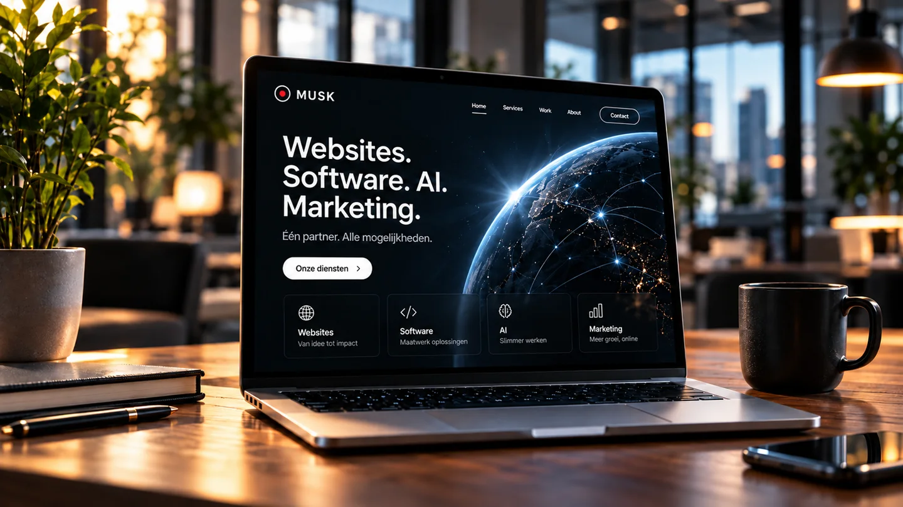
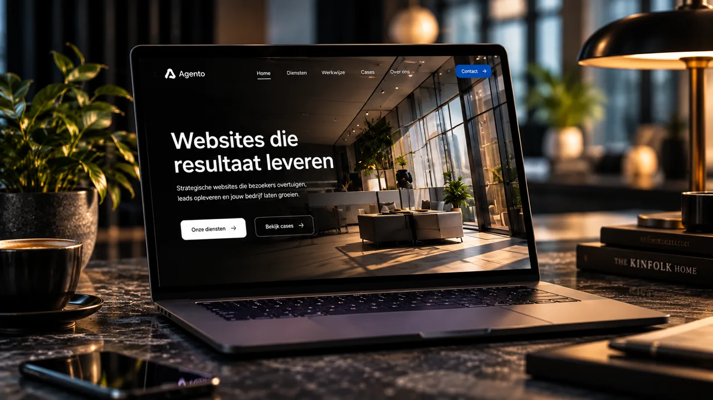

Alles wat nodig is om digitaal vooruit te werken.
Wij combineren strategie, creativiteit en technologie in oplossingen die niet naast uw organisatie staan, maar er onderdeel van worden.
06 disciplines · 01 partnerZelfstandig werk uit handen nemen.
AI wordt pas echt waardevol wanneer het verder gaat dan vragen beantwoorden. Wij ontwikkelen agents die informatie verwerken, beslissingen voorbereiden, acties uitvoeren en complete workflows ondersteunen — gekoppeld aan de systemen die u dagelijks gebruikt.
- Leads beoordelen en opvolgen
- Documenten analyseren
- Rapportages voorbereiden
- CRM-systemen bijwerken
- Interne kennis ontsluiten
- Terugkerende controles uitvoeren
Een digitale collega voor iedere rol.
Een AI-gedreven medewerker wordt ingericht voor een specifieke rol binnen uw organisatie. Niet om mensen te vervangen, maar om hen slimmer te laten werken terwijl routinematig uitvoerend werk wordt ondersteund.
- Digitale salescollega
- Digitale klantenservice
- Backoffice-ondersteuning
- Marketingassistent
- Interne kennisassistent
- Controle met menselijke regie

Uw eerste verkoopgesprek begint online.
Wij combineren design, techniek, gebruikservaring en conversie in één doordachte omgeving. Eerst bepalen we wat een bezoeker moet voelen, begrijpen en doen. Daarna bouwen we de structuur en ervaring.
- Bedrijfswebsites
- Landingspagina’s
- Leadgeneratie-websites
- Maatwerk webplatforms
- CRM-koppelingen
- AI-functionaliteit
Software past zich aan uw bedrijf aan.
Excelbestanden, handmatige overdrachten en dubbele invoer kosten tijd en creëren fouten. Wij brengen processen in kaart en bouwen maatwerksoftware en automatiseringen die data, applicaties en mensen verbinden.
- Klantportalen
- Dashboards
- Interne tools
- Workflowmanagement
- Planning & calculatie
- Systeemintegraties
Aandacht wordt pas waardevol als het groeit.
We bouwen geen verzameling losse campagnes, maar een digitaal ecosysteem waarin website, advertenties, content, automatisering, CRM en AI elkaar versterken.
- Online marketingstrategie
- Positionering
- Campagneconcepten
- Leadgeneratie
- AI-contentworkflows
- Analyse & optimalisatie
Eén tik. Direct verbonden.
Een slimme NFC-kaart maakt van ieder contactmoment een digitale verbinding. Koppel een persoonlijk profiel aan contact opslaan, afspraak inplannen, leadregistratie en uw CRM.
- Ondernemers & consultants
- Sales- en beursteams
- Makelaars
- Hospitality
- Recruitment
- Zakelijke events